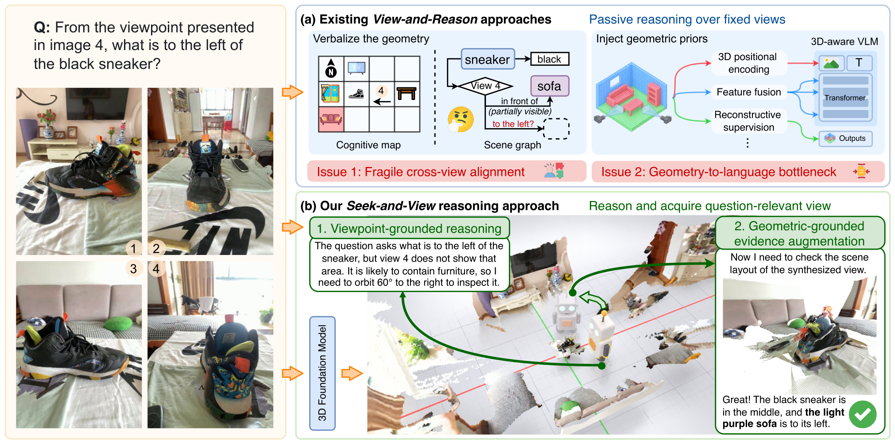
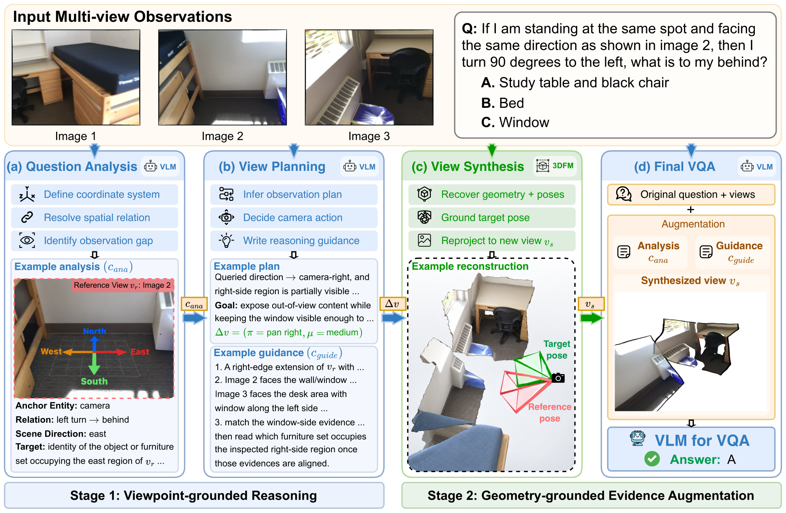
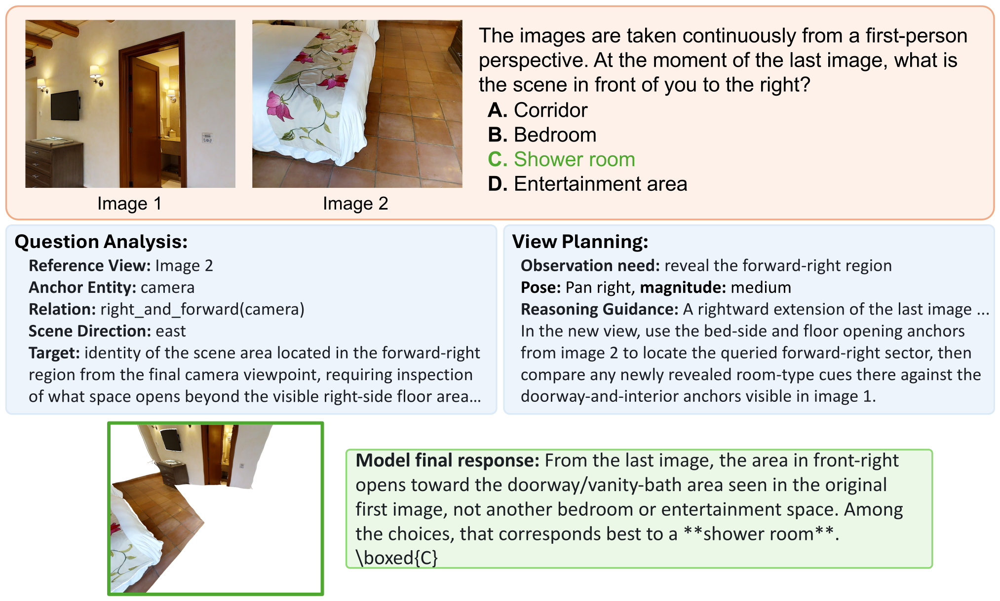
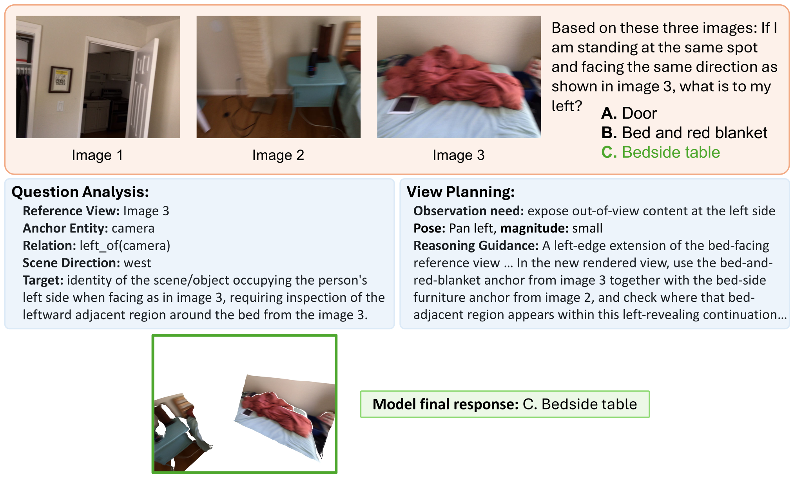
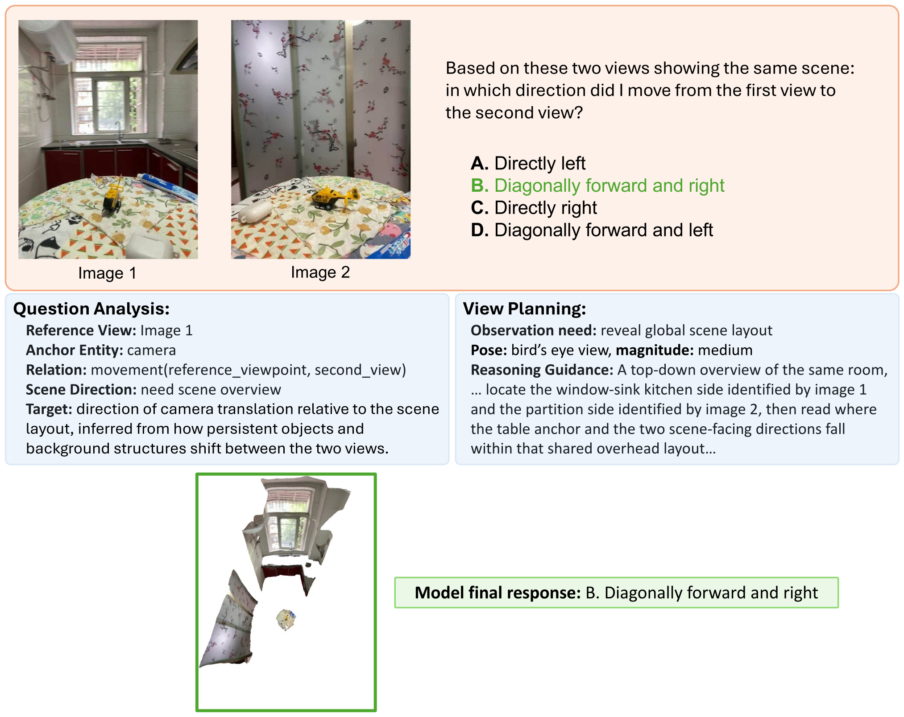
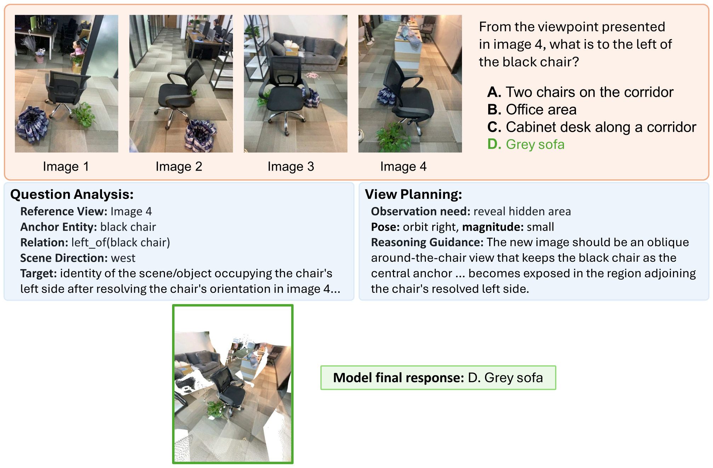
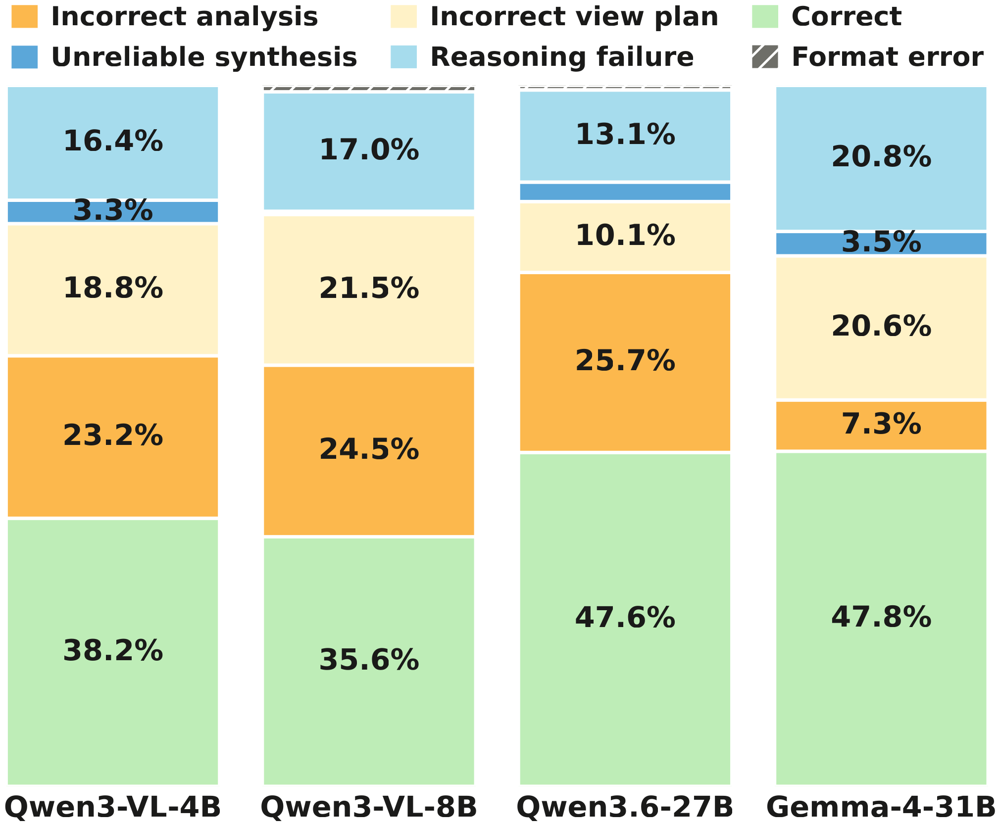
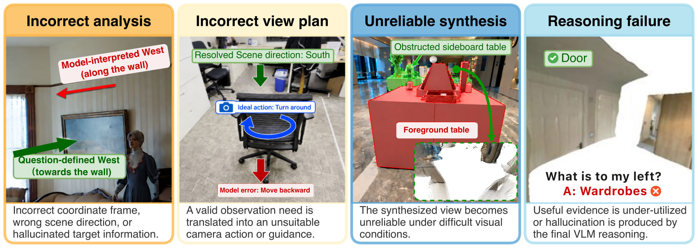

(a) Existing approaches reason over fixed views, suffering from fragile cross-view alignment and the geometry-to-language bottleneck. (b) Our novel Seek-and-View reasoning paradigm seeks a question-relevant view (see bottom right) to make the spatial evidence directly observable.
Existing approaches to multi-view spatial reasoning operate largely on sparse input views. Vision-language models (VLMs) are thus restricted to understand a scene and infer spatial relations within these fixed views, leading to fragile cross-view alignment and geometry-to-language bottleneck. To address these issues, we formulate a novel Seek-and-View reasoning approach to find implicit cross-view spatial evidence by locating a question-relevant view to support the spatial reasoning. To realize this approach, we propose Vantage, a training-free model-agnostic reasoning framework that pairs a VLM with a 3D foundation model, a viewpoint-grounded reasoning stage for question analysis and view planning, followed by a geometry-grounded evidence augmentation stage to effectively synthesize and incorporate visual evidence into the final reasoning. Comprehensive experiments on six VLMs demonstrate consistent improvements on five benchmarks without fine-tuning. Overall, by revealing spatial evidence through view-grounded reasoning, Vantage can largely reduce reliance on language-based cross-view alignment and improve multi-view spatial understanding.
Strong semantic and contextual reasoning ability does not inherently enforce the structured, globally consistent geometric constraints required across views, leaving the alignment implicit and error-prone.
Upon compressing the spatial geometry into discrete semantic descriptions, the reasoning would potentially overlook fine-grained spatial information.
Reasoning stays passive over the fixed, sparse observations.
Reasoning seeks a question-relevant view that makes the spatial evidence directly observable.
Humans can conceptualize the 3D structure of a scene and seek a vantage viewpoint that resolves the spatial relation. Vantage gives a VLM the same option.
We propose Vantage, a two-stage training-free and model-agnostic framework with a viewpoint-grounded reasoning stage and a geometry-grounded evidence augmentation stage, explicitly coupling VLM reasoning with a 3D foundation model.

(a) The VLM first analyses the question and identifies the observation needs. (b) It then plans a question-relevant view and generates reasoning guidance specifying which spatial cues should be examined. (c) A 3D foundation model reconstructs the scene and realizes the planned view in a gravity-aligned coordinate frame. (d) The VLM finally answers the question with the original observations augmented by the synthesized view and supporting reasoning context.
Across five spatial reasoning benchmarks and six VLMs spanning a wide range of model scales, Vantage consistently improves the average accuracy of all six models without any additional training.
Accuracy per benchmark (%); see the paper for detailed subset-level results.
| Model | MindCube-tiny | MMSI-Bench | BLINK Multi-view | OmniSpatial Perspective | SPINBench | Avg. | % Gain |
|---|---|---|---|---|---|---|---|
| Training-scaled spatial model | |||||||
| SenseNova-SI-1.5-InternVL3-8B | 93.2 | 45.2 | 63.9 | 52.0 | 43.0 | 59.5 | – |
| Model-scaled spatial agent | |||||||
| GCA (Qwen3-VL-235B-A22B-Thinking) | 64.2 | 51.2 | – | 58.6 | – | – | – |
| Vantage on base models | |||||||
| Qwen3-VL-4B | 26.0 | 27.9 | 41.4 | 42.1 | 53.2 | 38.1 | +13.1 |
| + Vantage | 38.9 | 33.7 | 42.1 | 47.2 | 53.4 | 43.1 | |
| Qwen3-VL-8B | 31.3 | 30.1 | 44.4 | 43.9 | 53.2 | 40.6 | +0.7 |
| + Vantage | 31.6 | 30.1 | 45.1 | 45.1 | 52.5 | 40.9 | |
| InternVL3-8B | 36.8 | 28.4 | 54.1 | 44.0 | 48.9 | 42.4 | +4.2 |
| + Vantage | 39.9 | 30.2 | 55.6 | 43.9 | 51.3 | 44.2 | |
| Qwen3.6-27B | 63.0 | 42.3 | 28.6 | 52.6 | 89.2 | 55.1 | +7.3 |
| + Vantage | 68.8 | 44.8 | 29.3 | 64.7 | 88.0 | 59.1 | |
| Gemma-4-31B | 53.5 | 36.8 | 36.1 | 51.7 | 71.1 | 49.8 | +9.4 |
| + Vantage | 61.9 | 37.1 | 44.4 | 55.1 | 73.9 | 54.5 | |
| GPT-5.4 | 44.2 | 34.4 | 48.1 | 47.4 | 59.3 | 46.7 | +14.3 |
| + Vantage | 54.3 | 41.1 | 54.1 | 53.7 | 63.9 | 53.4 | |
The two reference rows achieve SOTA performance through either large-scale spatial-task training or tool-integrated agents built on substantially larger VLMs. In contrast, Vantage is training-free, leaves the base models unchanged, and generalizes across a wide range of model scales.
Qualitative example of Vantage with GPT-5.4. For clarity, we simplify the original model outputs and present only the key intermediate information relevant to the reasoning process.






Left Macro-averaged failure analysis. Right Representative failure cases by type.
We perform a failure audit across multiple models and multi-view benchmarks to identify the dominant failure modes of Seek-and-View. Most residual errors arise from incorrect analysis and incorrect view planning, indicating that deciding what should be seen and how to reach it remains the main bottleneck. Unreliable synthesis is comparatively rare and mostly occurs under challenging visual conditions, suggesting that Seek-and-View can tolerate imperfect rendering as long as the synthesized view preserves sufficient geometric and semantic evidence. Reasoning failures arise when the final VLM under-utilizes useful evidence in the sought view or produces an inconsistent reasoning trace.
If you find this work interesting or relevant to your research, please consider citing our paper 😊
@misc{chen2026seekandviewreasoningmultiviewspatial,
title={Seek-and-View Reasoning for Multi-View Spatial Understanding},
author={Qixiang Chen and Cheng Zhang and Fucai Ke and Chi-Wing Fu and Jianfei Cai and Jingwen Ye},
year={2026},
eprint={2610.11810},
archivePrefix={arXiv},
primaryClass={cs.CV},
url={https://arxiv.org/abs/2610.11810},
}